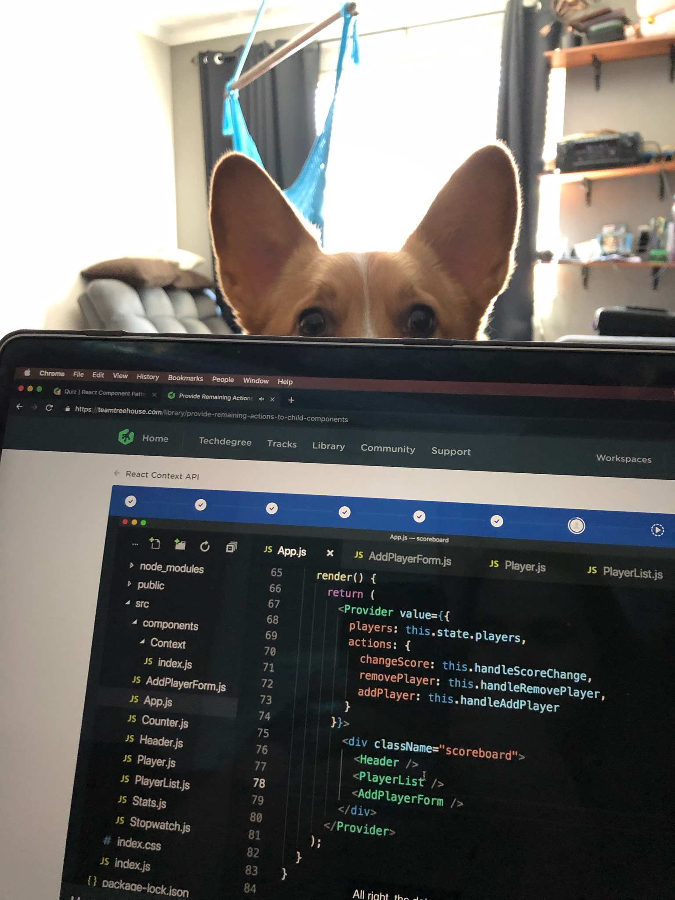

Why Coding?
My perception of coding has changed over the years, for a long time I kept my distance due to foolish misconceptions that it was entirely math driven and high-level engineering. Thankfully that changed when I took the plunge into self-teaching with free code camp, delving into languages that sounded familiar, mainly HTML and CSS
I soon noticed that there is an ever-expanding list of languages, libraries, and frameworks, of which I needed a more directed approach to learning. Thus I joined the Actualize team and after a 12-week Bootcamp, I found my knowledge more robust as well as a strong toolkit to apply towards learning new languages and skills. During my time in the Bootcamp, I realized that I enjoyed creating RESTful APIs and web app front ends utilizing my eye for design, organization, and attention to detail. Now I branching out into Swift and app development that so far I find very rewarding.
In summary, I chose software development to have an outlet for my creativity, play to my strengths of problem-solving, design and organization, while having the fulfillment of building something for others. Who would say no to the ability to create anything their heart desires? I know I can't, even though my desires are usually to create nerdy apps.
Most Recent Projects
Craft Local
A Web App concept designed around helping the independent brewing industry. Focusing on the little guy (Craft beer and Independent Breweries) I decided to create a link between the local community and brewers, thus the name Craft Local. Breweries post new offerings and schedule events while users view breweries based on their vicinity. Each beer has a page breakdown elaborating on the attributes and description of the products. Ideally, this web app will benefit the industry by a streamlined showcase for activities and products a brewery provides.
Check it Out

GitHub
Get a look behind the scenes at projects in progress as well as practice examples while I learn new languages, frameworks, and skills.
Check it Out